Take-on General Ledger Opening Balances
Entering opening balances for general ledger accounts
To enter opening balances for general ledger accounts, you will need to have the account balances as of the start of your accounting period. This could be the beginning of a new financial year or the start of a new accounting cycle.
It is important to ensure that your opening balances are entered accurately, as they will form the foundation for all future transactions in your accounts. You should also ensure that you have supporting documentation for your opening balances, such as, bank statements and previous trial balance and other financial statements.
Once you have entered your opening balances, you can begin recording transactions for the current period. You should also regularly review and reconcile your accounts to ensure that they are accurate and up-to-date.
Guidelines to process opening balances for general ledger accounts
When setting up a new accounting system, it is important to set up the chart of accounts correctly to ensure that your financial information is accurate and organized. Here are some steps you can follow to set up your chart of accounts:
- Review your existing chart of accounts: If your new Set of Books already includes a chart of accounts, review it to ensure that it meets the needs of your business. Compare it to your previous accounting system's chart of accounts to identify any differences.
- Make necessary changes: If your new Set of Books chart of accounts is missing any accounts that you need, or includes accounts that you don't require, make the necessary changes. This may involve adding new accounts, deleting accounts, or modifying account names or numbers.
- Determine account structure: Determine the structure of your accounts, including the number of digits in your account numbers, the grouping of accounts, the linking of account groups to financial categories, and the use of sub-accounts. This will help ensure that your accounts are organized in a way that makes sense for your business.
- Create a standard naming convention: Establish a standard naming convention for your accounts to ensure consistency and clarity. This may involve using abbreviations, codes, or other conventions to make it easier to identify accounts.
- Enter your opening balances: Once you've set up your chart of accounts, enter the opening balances for each account to ensure that your financial statements are accurate from the beginning.
- Review and adjust: After setting up your chart of accounts and entering opening balances, review your work to ensure that everything is correct. Make any necessary adjustments to ensure that your accounts are accurate and organized.
By following these steps, you can ensure that your chart of accounts is set up correctly and that your financial information is accurate and well-organized.
Steps to Process General Ledger Opening Balances
Once you have set up your chart of accounts and entered the opening balances correctly, you can begin recording transactions in your new accounting database. It is important to maintain accurate records of all transactions to ensure that your financial statements are accurate.
To maintain accurate records, you should:
- Record transactions timely: Record all transactions as soon as possible to avoid any delay and ensure that the records are up-to-date.
- Enter all transactions correctly: Ensure that you enter all transactions accurately, with the correct account and amount.
- Categorize transactions correctly: Categorize transactions correctly based on the chart of accounts you have set up, to ensure that your financial reports reflect the correct information.
- Reconcile accounts regularly: Regularly reconcile your accounts to ensure that your records match your bank and other statements. This will help you identify and correct any errors or discrepancies.
- Generate financial reports: Regularly generate financial reports, such as balance sheets and income statements, to help you analyse the financial health of your business.
By following these practices, you can maintain accurate records in your new accounting database, which will help you make informed business decisions and ensure that your financial statements are accurate.
Example: Source document
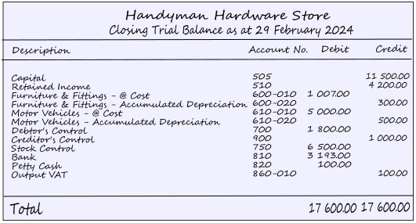
Process opening Balances in General journal
These transactions can be replicated in HANDYMAN, HANDYMAN-A en HANDYMAN-B Tutorials Sets of Books.
Since you cannot enter transactions to the Debtors control account and Creditors control account you need to:
- Add an "Opening balances - Debtors" account in the Debtors ledger in Debtors (Default ribbon).
- Add an "Opening balances - Creditors" account in the Creditors ledger in Creditors (Default ribbon).
To enter opening balances from your trial balance:
- On the Default ribbon, select Batch entry (F2).

|
|
If no contra account, or a different contra account than the contra account you wish to use, is displayed on the Batch type selection screen, you need to set up the options for the batch. If you have not yet set up the General journal, or if your requirements should change, click on the F10:Setup icon. |

- Select the General Jnl and click on the Open button.
- Enter the Alias (batch name) in the 'Change alias' field on the "Batch entry" screen.

Batch Settings
Before you can process transactions for opening balances, you first need to setup or configure the batch (journal). The setup "Options for this batch", consists of two tabs, i.e. Standard tab and Advanced tab.
To set the Options for this batch:
- Click on the F10:Setup icon to set your batch up. On the Standard tab, the options is as follows:
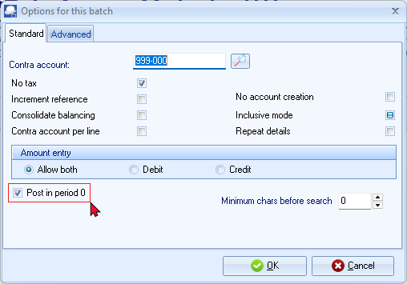
|
|
The first time you enter transactions in a General journal, you should set it up according to your requirements. This should be done for each journal, but only need to be done once, unless your requirements change. |
- The recommended settings (Standard tab) for entering opening balances in the General journal, is as follows:
- Contra account - The relevant contra account for the batch (i.e. the account to which osFinancials5/TurboCASH5 will create a balancing entry). Select the suspense account, i.e. “999 - Suspense Account”.
- No Tax - Select this option, as no VAT/GST/Sales Tax (Output VAT/GST/Sales Tax and Input VAT/GST/Sales Tax) is applicable to the opening balance transactions.
- Consolidate balancing - If you tick this field, osFinancials5/TurboCASH5 will consolidate all balancing entries into 1 entry, if you have used an account more than once. As for the take-on of opening balances, it is NOT necessary to tick this option, since you will be entering both debits and credits from your Trial balance and will not be asking osFinancials5/TurboCASH5 to balance the batch.
- Repeat details - If you tick this field, the detail entered in the "Description" column will be repeated (duplicated) on each subsequent line. Tick this option to repeat the details for the next transactions.
- Amount entry - Set to “Allow both”, since you will enter amounts in both the debit and credit column.
|
|
The rest of the tick-boxes may be left blank. |
- Post in period 0 - Need to tick this field for opening balances, if you need to post retained income transactions to the previous year.
|
|
If the "Post in period 0" field is not selected (ticked), you will not be allowed to post the transactions to the Retained earnings / income account. An error message (similar to this error message, will be produced: “This batch does not validate! |

- Click on the Advanced tab. On the Advanced tab, the options is as follows:
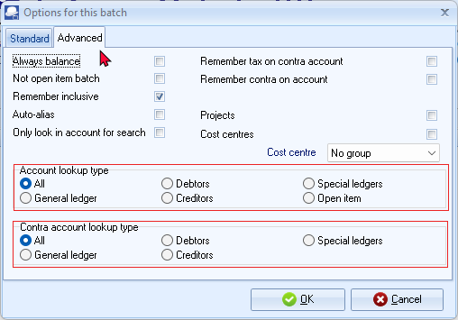
- Leave all fields blank, and make sure that the default option, "Account lookup type" and "Contra account lookup type" both, is set to “All” for opening balances.
|
|
You need to enter the total opening balance for all debtor accounts in the Debtors control account on the source Trial balance to the "Opening balances - Debtors" account. There after you need to clear this Opening balances - Debtors" account and debit the individual debtor accounts with their own opening balances. Similarly, you need to enter the total opening balance for all creditor accounts in the Creditors control account on the source Trial balance to the to the "Opening balances - Creditors" account. There after you need to clear this Opening balances - Creditors" account and credit the individual creditor accounts with their own opening balances. |
- Click on the OK button.
Capturing opening balances in the General ledger
Capture the transactions, from your source document (Trial balance) from your previous accounting system.
- Capture the first transaction as follows:
- Reference: JNL1
- Date: 2024/02/29
- Description: Opening Balance Take-on
- Account: 505 (for Capital)
- Amount: 11500.00 CR
|
|
Use the same reference number, date and details for all the entries. |
|
|
Tax Since No Tax (VAT/GST/Sales Tax) is applicable, to the opening balance transactions in this tutorial, we have selected to hide the Tax column in the Setup Options. |
- Repeat as above for capturing the rest of the Trial balance. After capturing the Trial balance, the transactions should reflect as follows:
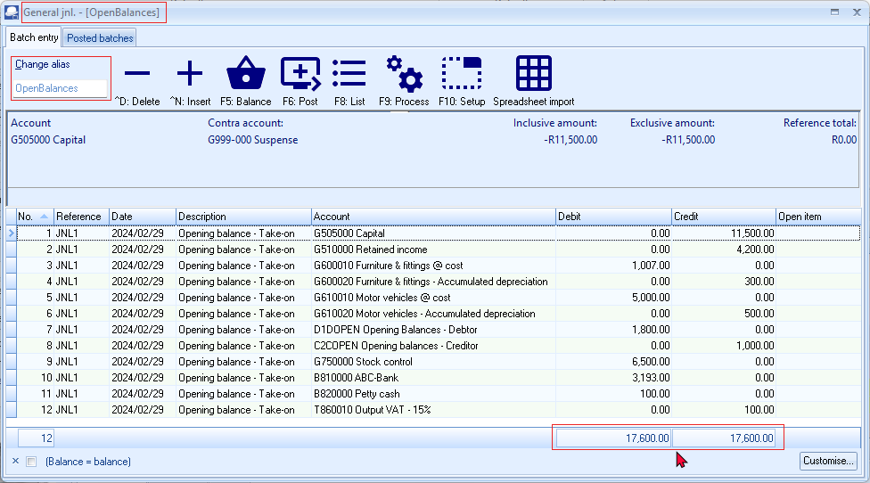
|
|
When entering the opening balance for the Debtor's control account (Account number G700-000), will not allow you to select the Debtor's control account. The same applies to the Creditor's control account (Account number G900-000). The reason for this is that you cannot post any transactions to the Debtor's control account in the General ledger. You need to select the individual Debtor accounts in the Debtor's ledger, to take on each individual Debtor's opening balance. When posting the transactions for the opening balances in the General journal, the Debtor's control account in the General ledger will automatically be updated with the total of all the individual transactions posted to the Debtor's ledger. |
|
|
It is not necessary to "balance" your batch, as your Trial balance should already be in balance. You will note that there is an amount indicating the difference between the debit and credit entries at the end of the Debit Amount column. This amount (and the Reference Total at the bottom of the screen) should reflect a zero after entering all your transactions. |
Checking your transactions before posting the transactions
Once your transactions is entered in the General ledger journal, you need to make absolutely sure that you have captured the transactions correctly. This is crucial to post the transactions on the correct date, correct references, descriptions debit and credit amounts to the correct accounts.
To print a list of transactions in the unposted batch:
- Click on the F8:List icon to print a list of the transactions in the batch (journal). The batch list is displayed as follows:
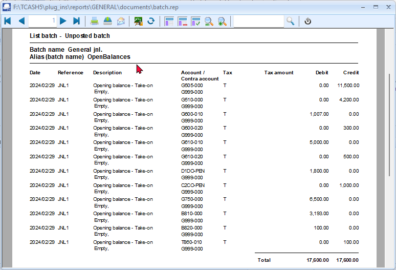
|
|
It is recommended that the source document (e.g. trial balance or balance sheet and income statement, etc.) be attached to this List of the transactions (take-on of opening balances) and that it be retained for record and audit purposes. You may also click on the 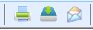 icon (Save the report as a metafile report), and save it as a PDF - compressed file for archiving purposes. |

- If there are any errors, you may fix this before you update (post) the transactions to the ledger.
|
|
Print a Trial balance for unposted batches You may print a Trial balance of unposted batches journals. To do this, press the F2-key and right-click on the Batch entry selection screen and select "Trail balance" from the context menu. A confirmation screen will be displayed: "Unposted only?" Click Yes and the Trial balance for unposted batches (journals) will be launched: 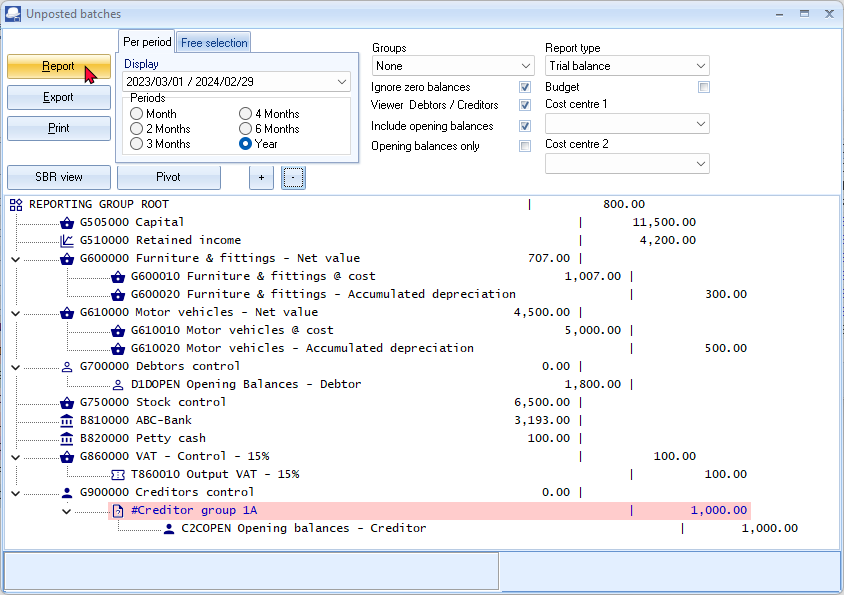 NOTE: Initially, the Print button will not be displayed. To display the Print button, go to the "Report type" and re-select the "Trial balance". You may print the Trial balance for unposted batches. An example of the Trial balance for the opening balances (not updated (posted) to the ledger should display as follows: 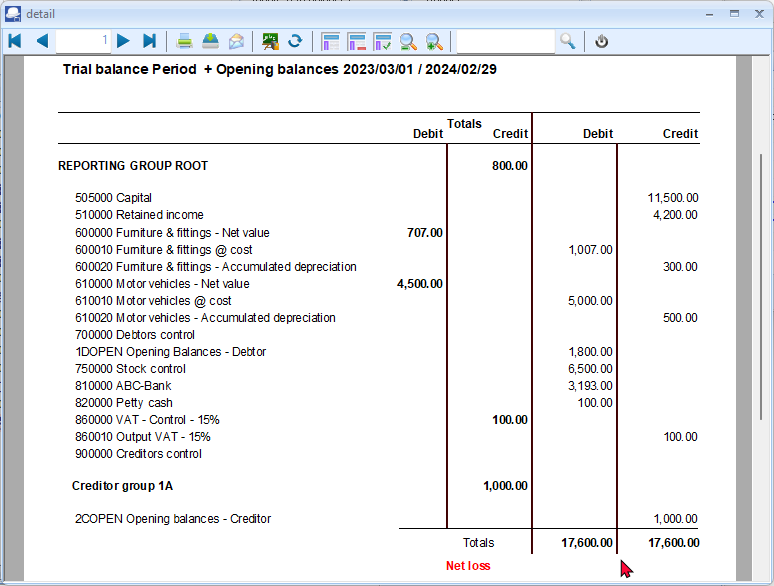 - |
Update (post) transactions to the ledger
Once you have entered your transactions an you are absolutely sure that it is correct, you may proceed with the final step in processing jour opening balances in the journal (batch).
To Update (post) transactions to the ledger:
- Click on the F6:Post icon, to post (update) the batch to the ledger. A confirmation message will be displayed.
“Do you want to continue posting? Batch contains transactions posting to last year!”
- Click on the Yes button, or press the Enter key to continue. A confirmation message will be displayed.
“Do you wish to post on the retained earnings account?”
|
|
If you click on the No button, the transactions will not be posted. |
- osFinancials5/TurboCASH5 will now post all the transactions to the general ledger.
Opening Balances - Transactions
Once the transactions is updated (posted) to the ledger, you may print a Trial balance of your opening balances.
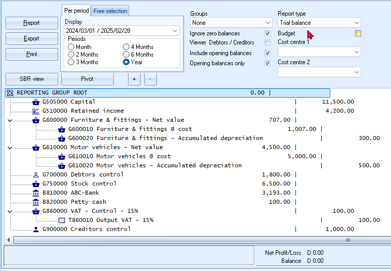
Click on the Print button to print your opening balances.
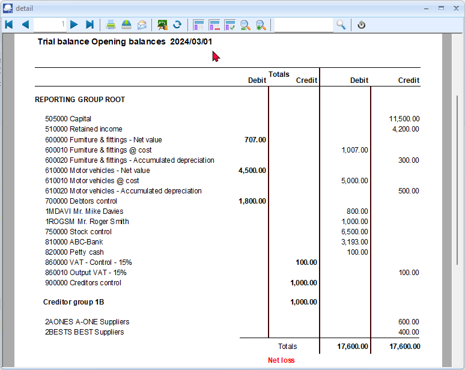
Ledger analyser - View transactions
In the Ledger analyser you may export your transactions and open it in a spreadsheet. In addition to this, you have two options to view your transactions.
- T-Account viewer - View and filter and export your transactions.
- Pivot - View and analyse your transactions in pivot tables.
T-Account viewer
Once you have printed the Trial balance, you may print and view and analyse your transactions in the T-Account account viewer.
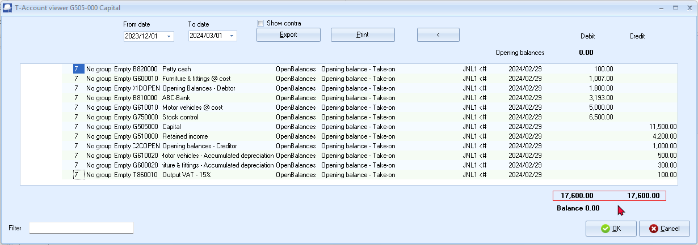